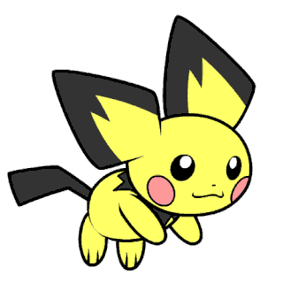
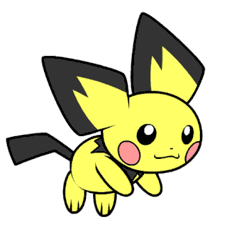
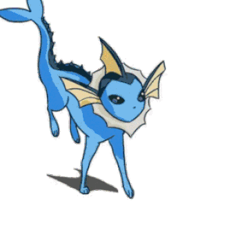
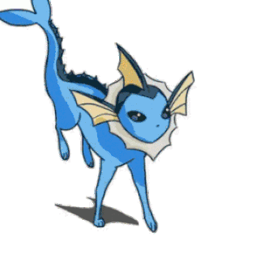

🅿🅾🅺🅴🅼🅾🅽
https://animesonline.cc/tv/.jpg)
ピカチュウ
イブ


 
  
 
ℙ𝕠𝕔𝕜𝕖𝕥 𝕄𝕠𝕟𝕤𝕥𝕖𝕣𝕤
AS NEVES DE HISUI
novas descorbetas
as aventutas de pikachu
Pokémon é uma franquia de mídia que pertence a The Pokémon Company, tendo sido criada por Satoshi Tajiri em 1995. Ela é centrada em criaturas ficcionais chamadas "Pokémon", que os seres humanos capturam e os treinam para lutarem entre si com seus ataques de diversos tipos portanto não e um esporte tipo o "Boxe" Mais cedo, o governo ucraniano havia dito que soldados russos já vinham intensificando os esforços para assumir o controle da usina nuclear de Zaporizhzhia. A Rússia já capturou a extinta usina de Chernobyl, a cerca de 100 quilômetros ao norte da capital da Ucrânia, Kiev. A Agência Internacional de Energia Atômica, ligada às Nações Unidas, pediu que as tropas russas e ucranianas deixem de combater na área próxima à da usina.